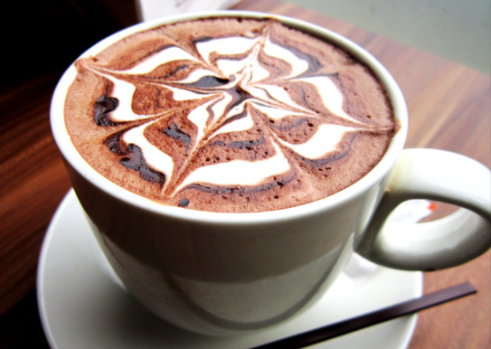

Moka Coffee Recipe
Ingredients:
- 1 cup of water
- 2 tablespoons of ground coffee
- Milk or sugar (optional)
Instructions:
- imgFill the bottom chamber of the Moka pot with water up to the safety valve.

- Place the ground coffee into the filter basket without pressing it down.

- Assemble the Moka pot by screwing the top and bottom chambers together.

- Place the Moka pot on medium heat.

- Wait for the coffee to brew and fill the top chamber.

- Once you hear a hissing sound, remove the Moka pot from heat.

- Pour the coffee into a cup and add milk or sugar if desired.

- Enjoy your Moka coffee!
